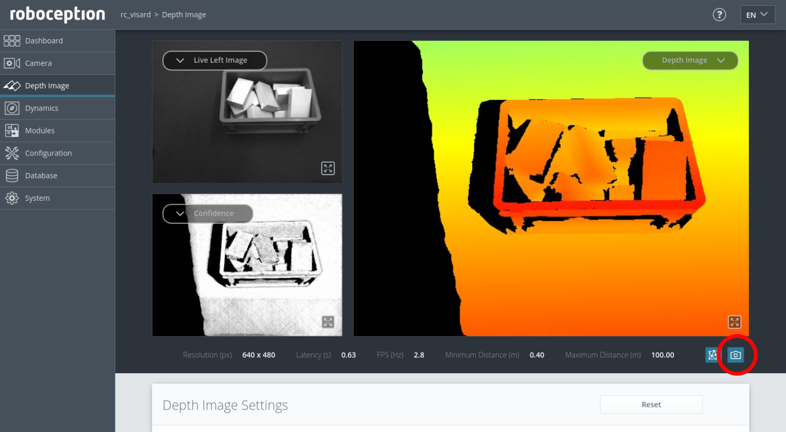

Recording data for evaluation¶
This tutorial shows how to record sample data sets with the rc_visard as single snapshots or image sequences.
In order to go through this tutorial, the rc_visard must be running the latest firmware (version 23.04). This can be verified on the page of the Web GUI.
Downloading single snapshots¶
The recommended way to capture a snapshot of the current scene is via the rc_visard’s Web GUI.
For evaluation of use-cases and support, Roboception requires snapshots taken from the Depth Image page of the Web GUI.
A new snapshot of the current scene is downloaded by clicking on the camera icon below the image live streams (see Fig. 9). This will create an archive containing the left and right camera images, the disparity, error and confidence images, as well as the current point cloud as a ply file, and the rc_visard’s current parameters.
Fig. 9 Web GUI Depth Image page with snapshot button
{kind=link}
The steps below describe the optimal sensor setup before capturing snapshots:
In the Camera page of the Web GUI
- make sure that the Exposure is set to Auto
- optionally set an Exposure Region around the objects of interest
Steps 2 to 5 only apply to users of the rc_randomdot projector
In the Camera page of the Web GUI, set the Auto Exposure Mode to AdaptiveOut1
Follow the Obtain dense depth images with the rc_randomdot projector tutorial to configure the projector
In the Depth Image page of the Web GUI
- select Single+Out1 as Acquisition Mode
- increase the Exposure Adaptation Timeout to the maximum (2 seconds)
- press the Acquire button a few times
Back on the Camera page of the Web GUI
- check that the Out1 Reduction value reported below the live image streams is below 50%. If not, decrease the aperture of the rc_randomdot projector, or add more light to the scene.
- increase the Min Brightness value, if the images appear too dark
Final verification steps for all users
- Check that the Gain reported below the live image streams in the Camera page is as low as possible (ideally 0 dB). The Gain can be decreased by adding more light to the scene.
- Check that the Confidence Image in the Depth Image page is bright on the objects of interest. If not, follow the steps described in the Increasing Density tutorial.
Note
Users of the rc_reason software modules have also the possibility to download snapshots of the last detection from each module’s page in the Web GUI (currently available for LoadCarrier, ItemPick, BoxPick, and SilhouetteMatch).
These snapshots should be provided to Roboception in addition to Depth Image snapshots, captured as described above.
Recording image sequences¶
Note
The following instructions are only applicable if you want to download image sequences (image streams) from the rc_visard. For recording single snapshots, follow the approach above.
Before we start¶
Before going through this tutorial, the following prerequisites should be met.
The rc_visard is up and running:
- The rc_visard is running and connected properly to the host. One can verify that with our discovery tool.
- One should know the serial number or user defined name of the rc_visard.
The serial number is of the format 029xxxxx.
It will be referred to as
rc_visard_idin the remainder of this tutorial.
Download and install the following required client software:
- Download rc_genicam_api
- Download rc_dynamics_api
For Ubuntu, we provide ready-to-use Debian packages.
Optional software for viewing the recorded images can be installed:
Download cvkit.
For Linux, it is easiest to download the source code and build it by entering the main directory and typing:
mkdir build
cd build
cmake ..
make
sudo make install
Images can be viewed using the viewer sv. Disparity images, i.e.
with the suffix .pfm can be viewed in 3D by pressing ‘p’ or calling
plyv with the disparity image as argument. Both tools show a help
page with all key codes by pressing ‘h’.
Download cvkit.
For Windows, pre-compiled software is available in a ZIP archive. The archive contains a self-installing executable.
After installation, images can be viewed by double clicking on them in the explorer. Disparity images, i.e. with the suffix .pfm can be viewed in 3D by pressing ‘p’. Both tools show a help page with all key codes by pressing ‘h’.
The network configuration is optimized:
Enable “Jumbo frames” by setting the MTU to 9000.
Temporarily
Enter the following command in the terminal.
ifconfig <interface> mtu 9000
Persistently
- Open the network manager
- Select interface and edit settings
- On “Ethernet” tab, change MTU to 9000
- Open “Network Connections”
- Right-click on the network interface
- Choose “Properties”
- Click “Configure”
- On the “Advanced” tab, choose “Jumbo Packet”
- Select “9014 Bytes”
Recording data¶
We provide scripts for Linux and Windows to record data in our
rc_visard_offboard_record GitHub repository.
The script offers two modes:
An interactive mode that is started if the script is launched via a double-click
or called without any arguments from a terminal/command line window.
In that mode, the user is asked by the script for the rc_visard_id.
In standard mode, in contrast, the rc_visard_id is passed to the
script as command line argument, optionally next to other arguments.
Each time, the script runs, it creates a new folder in the working
directory (i.e. the place the script was started in) and writes all data to
that folder.
The folder’s name is of the format rc-visard_<SN>_<T>,
where <SN> is replaced by the rc_visard_id and <T> by the current time.
The images are stored in PGM or PPM format, which are supported
by many image viewers.
All other files are stored as text.
Caution
On Windows, proper configuration of the firewall is important.
On the first run of the script, the user will be asked whether the
rc_genicam_api and rc_dynamics_api tools should be allowed to
access the network.
This needs to be allowed, otherwise the script will not work properly.
In case of problems with data recording, temporarily disabling the firewall
can help to pinpoint the source of the problem.
It may be necessary to manually whitelist gc_info.exe, gc_config.exe
and gc_stream.exe that are located in the folder rc_genicam_api-*, and
rcdynamics_stream.exe that can be found in the folder
rc_dynamics_api-*.
Interactive mode¶
Start the script via double-click.
The script asks for the rc_visard_id, i.e. the serial number
(which is of the format 029xxxxx) or user defined name.
By entering L, all available rc_visard devices are listed.
Interactive mode does not allow changing of script parameters other than
the rc_visard_id.
If that is required, the standard mode should be chosen, as it offers more
flexibility.
Standard mode¶
In standard mode, the script is called from a terminal/command line window.
The basic usage is as follows:
Open a terminal.
Change to the script folder.
Launch the
rc_visard_record.sh:./rc_visard_record.sh [options] <rc_visard_id>
Open a terminal.
Change to the script folder.
Launch the
rc_visard_record.bat:rc_visard_record.bat [options] <rc_visard_id>
The script offers optional arguments, which can be listed with the -h flag:
./rc_visard_record.sh -h
rc_visard_record.bat -h
By default, the script will run until it is stopped with Enter and record
images from the left camera, disparity images, confidence images and error images.
This behavior can be changed by passing different arguments to the script. For example, to record only the left camera images and stop after 10 images, the following command can be used:
./rc_visard_record.sh --number=10 --left=true --right=false --disparity=false --confidence=false --error=false <rc_visard_id>
rc_visard_record.bat -n 10 -left true -right false -disparity false -confidence false -error false <rc_visard_id>
The cam-params argument allows to also record the current camera parameters
including the camera calibration.
It will write the parameters to the given file, below called params.txt.
./rc_visard_record.sh --cam-params=params.txt <rc_visard_id>
rc_visard_record.bat -cam-params params.txt <rc_visard_id>
The script also supports recording of the SLAM trajectory,
which can be enabled with the slam argument.
The script will automatically start and stop SLAM, and eventually write
the trajectory to the given file (trajectory.json in the example).
The trajectory is written when image grabbing is finished, which is either
when the user presses Enter or enough data sets are recorded
according to the number argument.
./rc_visard_record.sh --slam=trajectory.json <rc_visard_id>
rc_visard_record.bat -slam trajectory.json <rc_visard_id>
Troubleshooting¶
The script writes “gc_stream is not found” or “gc_info is not found”
rc_genicam_apiis not installed properly.
The script writes “rcdynamics_stream is not found”
rc_dynamics_apiis not installed properly.
The script writes “Cannot find device: 01234567” or “Device 01234567 not found”
The script could not find the rc_visard with the given serial number. Are serial number and network configuration correct?
The script writes “storeBuffer(): Received incomplete buffer”
The network configuration may be slow or not optimized properly. Is the rc_visard connected via a 1 GBit/s wired ethernet connection? Please follow network optimization. Try to connect the rc_visard to the host directly.
The script writes “Device::open() failed”
The rc_visard may have not booted completely yet, or another client may already be connected to the rc_visard.
The script writes “Cannot grab images”
The network may not be configured properly. On Windows, the firewall may block the network connection. Temporarily disabling the firewall can help to pinpoint the source of the problem. Try to connect the rc_visard to the host directly.